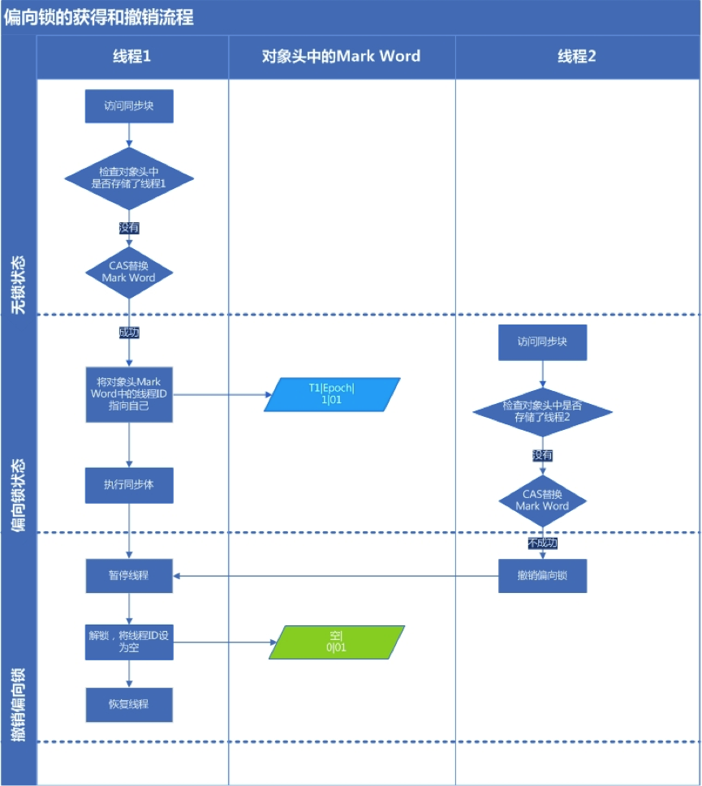

Java并发synchronized相关
本文主要内容来自 聊聊并发（二）——Java SE1.6中的Synchronized
1. 引言
在1.6以前 synchronized很多人称呼它为重量级锁，在Java SE1.6对它进行了各种优化，有些情况它就不那么重了。下面详细介绍了Java SE1.6中为了减少获得锁和释放锁带来的性能消耗而引入的偏向锁和轻量级锁，以及锁的存储结构和升级过程。
Java 1.6之后 对synchronized 进行了优化，引入了偏向锁和轻量级锁，以及锁的存储结构和升级过程。
关键字：
Java 1.6偏向锁轻量级锁锁的存储结构升级过程
2. 术语定义
| 术语 | 说明 |
|---|---|
| CAS (Compare and Swap) | 比较(Compare)并设置(Swap)。用于在硬件层面上提供原子性操作。比较是否和给定的数值一致，如果一致则修改，不一致则不修改。 |
Compare and Swap
关键字 ：
CompareSwap
3. 同步的基础
Java中的每一个对象都可以作为锁。
- 对于同步方法，锁是当前实例对象
- 对于静态同步方法，锁是当前对象的Class对象
- 对于同步方法块，锁是Synchonized括号里配置的对象
当一个线程试图访问同步代码块时，它首先必须得到锁，退出或抛出异常时必须释放锁。
三种使用
synchronized关键字的方式，以及对应的锁对象。线程在访问同步代码块时，首先需要获得锁，退出或者抛出异常时必须释放锁。
4. 同步的原理
JVM规范规定JVM基于进入和退出Monitor对象来实现方法同步和代码块同步但两者实现细节不一样。代码块同步是使用monitorenter和monitorexit指令实现，而方法同步是使用另外一种方式实现的，细节在JVM规范里并没有详细说明，但是方法同步同样可以使用这两个指令。
monitorenter指令时在编译后插入到同步代码块的开始为止，而monitorexit时插入到方法结束处和异常处，JVM要保证每个monitorenter必须有对应的monitorexit与之配对。任何对象都有一个monitor与之关联，当且一个monitor被持有后，它将处于锁定状态。线程执行到monitorenter指令时，将会尝试获得对象所对应的monitor的所有权，即尝试获得对象的锁。
任何对象都有一个monitor与之关联，monitor被持有后，对象将处于锁定状态。monitor的monitorenter、monitorexit指令在编译后分别插入到同步代码块的开始 、结束和异常处。
线程执行到monitorenter指令时尝试获得对象的锁
关键字：
同步原理对象关联monitor编译后插入
4.1 Java对象头
锁存在Java对象头里。如果对象时数组类型，则虚拟机用三个Word（自宽）存储对象头，如果对象时非数组类型，则用2字宽存储对象头。
| 内容 | 说明 |
|---|---|
| Mark Word | 存储对象的hashCode或锁信息等。 |
| Class Metadata Address | 存储到对象类型数据的指针 |
| Array length （数组类型时） | 数组的长度（如果当前对象是数组） |
Java对象头里的Mark Word 里存储对象的HashCode，分代年龄和锁标记位。32位JVM的Mark Word 默认存储结构如下：
| 25 bit | 4bit | 1bit是否是偏向锁 | 2bit锁标志位 | |
|---|---|---|---|---|
| 无锁状态 | 对象的hashCode | 对象分代年龄 | 0 | 01 |
在运行期间Mark Word 里存储的数据会随着锁标志位的变化而变化。Mark Word可能变化为存储以下4种数据：
| 锁状态 | 是否偏向锁 | 锁标志位 | |||
|---|---|---|---|---|---|
| 轻量级锁 | 指向栈中锁记录的指针 | 00 | |||
| 重量级锁 | 指向互斥量（重量级锁）的指针 | 10 | |||
| GC标记 | 空 | 11 | |||
| 偏向锁 | 线程ID | Epoch | 对象分代年龄 | 1 | 01 |
在64位虚拟机下，Mark Word是64bit大小的，（32位是32bit）其存储结构如下：
| 锁状态 | 分代年龄 | 偏向锁 | 锁标志位 | |
|---|---|---|---|---|
| 无锁 | 0 | 01 | ||
| 偏向锁 | ThreadID(54bit) Epoch(2bit) |
1 | 01 |
对象头信息 包含 Mark Word，数据指针，数组长度（如果是数组）
Mark Word 中记录了 hashcode ，对象分代年龄及锁信息。
关键字：
对象头Mark Word锁信息
4.2 锁的升级
Java SE1.6位了减少获得锁和释放锁所带来的性能消耗，引入了“偏向锁”和”轻量级锁“，所以在Java SE1.6里锁一共有四种状态，无锁状态，偏向锁状态，轻量级锁状态和重量级锁状态，它会随着竞争情况逐渐升级。锁可以升级但不能降级，意味着偏向锁升级成轻量级锁后不能降级成偏向锁。这种锁升级却不能降级的策略，目的是为了提高获得锁和释放锁的效率。下文会详细分析。
偏向锁 —> 轻量级锁 —>重量级锁
锁的升级机制。
锁一共有四种状态，无锁状态，偏向锁状态，轻量级锁状态和重量级锁状态。
锁可以升级但不能降级，不能降级的原因是为了提高获得锁和释放锁的效率
关键字：
锁的升级锁的状态锁不能降级
4.3 偏向锁
Hotspot的作者经过以往的研究发现大多数情况锁不仅不存在多线程竞争，而且总是由同一线程多次获得，为了让线程获得锁的代价更低而引入了偏向锁。当一个线程访问同步块并获取锁时，会在对象头和栈帧中的锁记录里存储偏向的线程ID，以后该线程在进入和退出同步块时不需要花费CAS操作来加锁和解锁，而只需简单的测试一下对象头的Mark Word里是否存储着指向当前线程的偏向锁，如果测试成功，便是线程已经获得了锁，如果测试失败，则需要再测试下Mark Word中偏向锁的标识是否设置成了1（表示是偏向锁）如果没有设置则用CAS竞争锁，如果设置了则尝试使用CAS将对象头的偏向锁指向当前线程。
偏向锁的撤销：偏向锁使用了一种等到竞争出现才释放锁的机制，所以当其他线程尝试竞争偏向锁时，持有偏向锁的线程才会释放锁。偏向锁的撤销，需要等待全局安全点（在这个时间点上没有字节码正在执行），它会首先暂停拥有偏向锁的线程，然后先检查有偏向锁的线程是否活着，如果线程不处于活动状态，则将对象头设置成无锁状态，如果线程仍然活着，拥有偏向锁的栈会被执行，遍历偏向对象的锁记录，栈中的锁记录和对象的Mark Word要么重新偏向于其他线程，要么恢复到无锁或者标记对象不适合作为偏向锁，最后唤醒暂停的线程。
下图的线程1演示了偏向锁初始化的流程，线程2演示了偏向锁撤销的流程

关闭偏向锁：偏向锁在Java6 和Java7是默认启用的。但是它在应用程序启动几秒钟之后才激活，如有必要可以使用JVM参数来关闭延迟。偏向锁可以通过JVM参数关闭，如果关闭则默认会进入轻量级锁状态。
当一个线程获得锁时，会在对象头和栈帧中的锁记录里存储锁偏向的线程ID，以后该线程进入和退出同步块时不需要花费CAS操作来加锁和解锁，只需要测试对象头中是否存储着指向当前线程的偏向锁，如果测试成功，表示线程已经获得了锁。如果测试失败，则需要再测试当前是否是设置了偏向锁，如果没有设置，则使用CAS竞争锁。如果设置了，则尝试使用CAS将对象头的偏向锁指向当前线程。
偏向锁使用了一种等到竞争出现才释放锁的机制，所以当其他线程尝试竞争偏向锁时，持有偏向锁的线程才会释放锁。
关键字：
偏向锁记录线程ID
4.4轻量级锁
轻量级锁加锁：线程在执行同步代码块之前，JVM会先在当前线程的栈帧中创建用于存储锁记录的空间，并将对象头中的Mark Word 复制到锁记录中，官方称为Displaced Mard Word。然后线程尝试使用CAS将对象中的Mark Word 替换为指向锁记录的指针。如果成功，当前线程获得锁，如果失败，则表示其他线程竞争锁，当前线程便尝试使用自旋来获取锁。
轻量级解锁：轻量级解锁时，会使用原子的CAS操作来将Displaced Mark Word替换到对象头，如果成功，则表示没有竞争发生。如果失败，则表示当前锁存在竞争，锁就会膨胀成重量级锁。下图是两个线程同时争夺锁，导致膨胀的流程图。

因为自旋会消耗CPU，为了避免无用的自旋（比如当前锁的线程被阻塞住了），一旦锁升级成重量级锁，就不会再恢复到轻量级锁状态。当锁处于这个状态，其他线程试图获取锁时，都会被阻塞住，当持有锁的线程释放锁之后会唤醒这些线程，被唤醒的线程就会进行新一轮的竞争。
当前线程在轻量级锁竞争失败时会尝试使用自旋来获取锁。
而升级到重量级锁后，其他线程试图获取锁时，都会被阻塞住，当持有锁的线程释放锁之后会唤醒这些线程，被唤醒的线程就会继续竞争。
关键字：
自旋阻塞
5. 锁的优缺点对比
| 锁 | 优点 | 缺点 | 适用场景 |
|---|---|---|---|
| 偏向锁 | 加锁和解锁不需要额外的消耗，和执行非同步方法比仅存在纳秒级的差距。 | 如果线程间存在锁竞争，会带来额外的锁撤销的消耗。 | 适用于只有一个线程访问同步块场景。 |
| 轻量级锁 | 竞争的线程不会阻塞，提高了程序的响应速度。 | 如果始终得不到锁竞争的线程使用自旋会消耗CPU。 | 追求响应时间。同步块执行速度非常快。 |
| 重量级锁 | 线程竞争不使用自旋，不会消耗CPU。 | 线程阻塞，响应时间缓慢。 | 追求吞吐量。同步块执行速度较长。 |